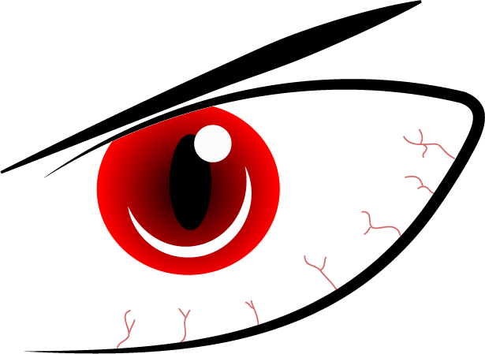

A vector illustration built using smooth Bézier curves, variable-width strokes, and a radial red-to-black gradient in the iris—paired with an angled brow, narrowed vertical pupil, specular highlights, and fine bloodshot veins—to convey intensity and rage.